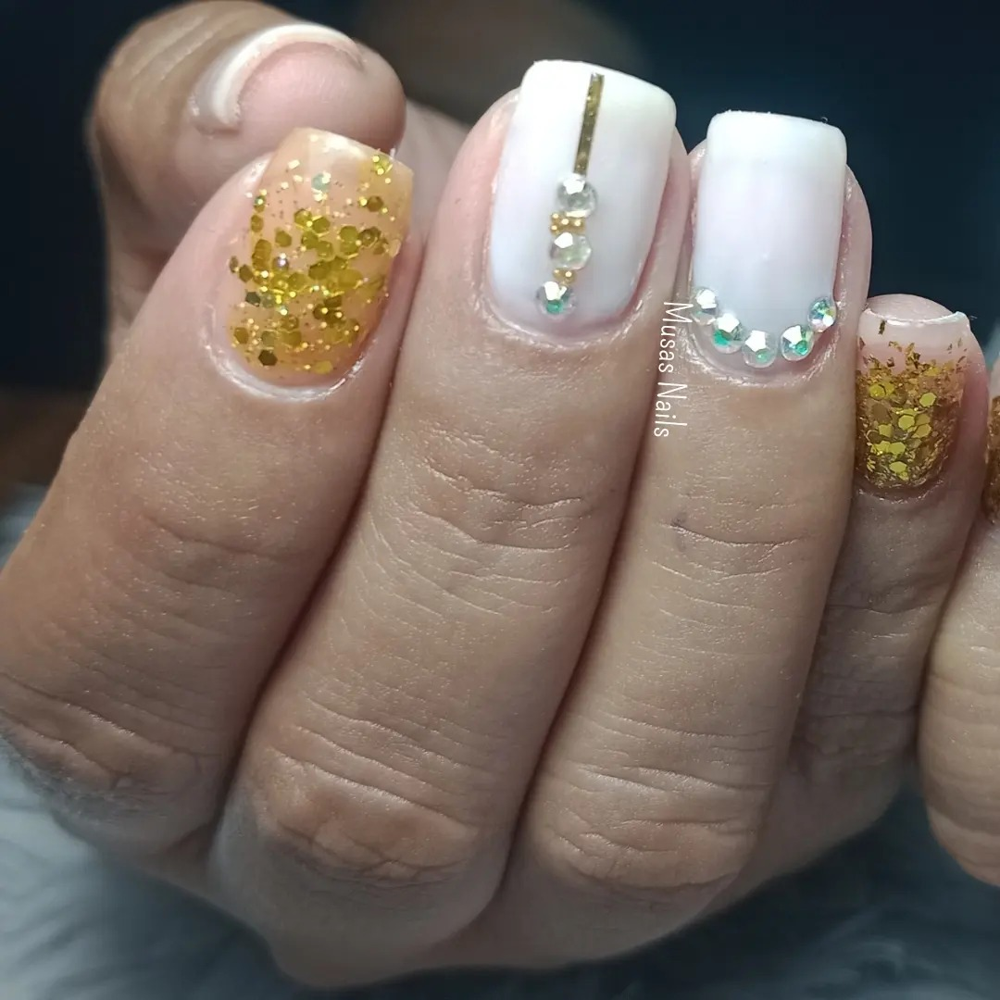
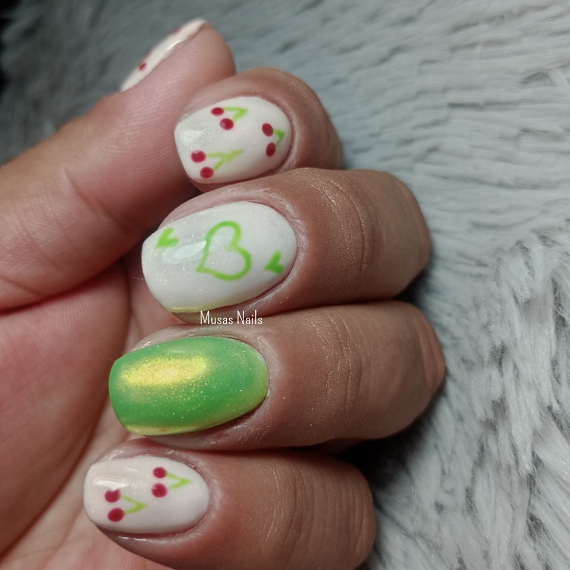
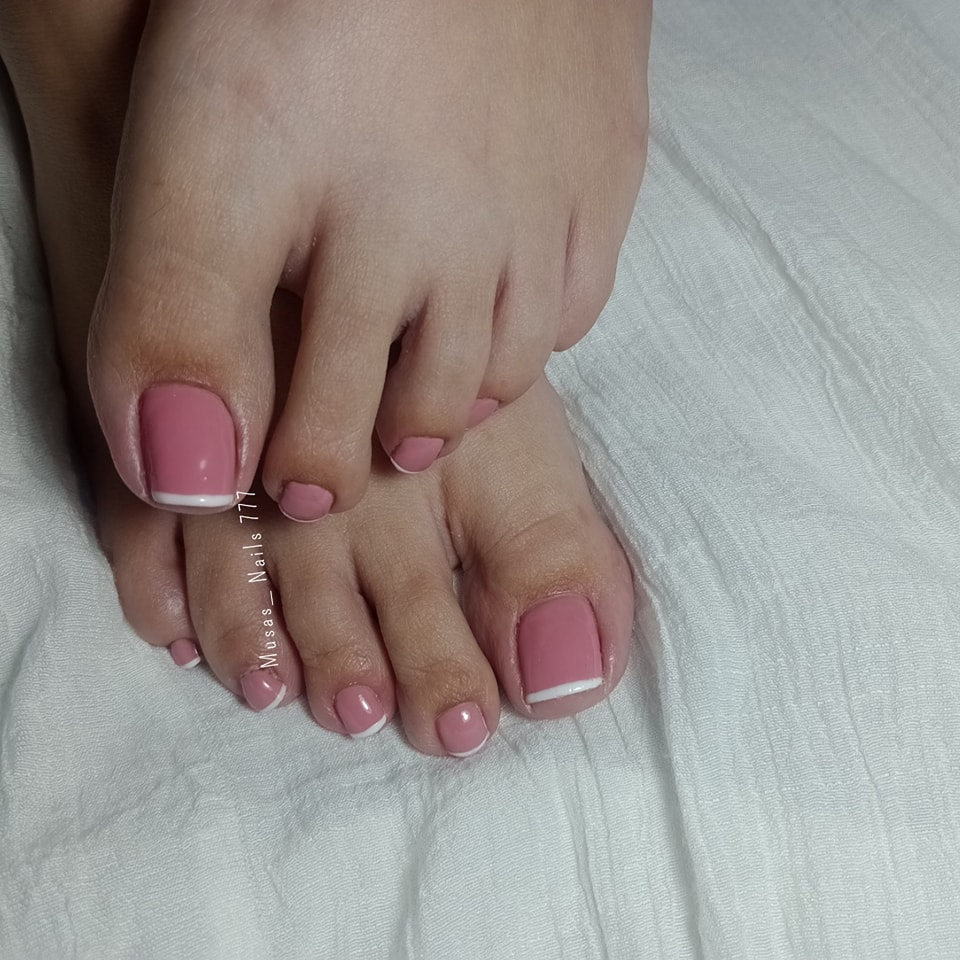
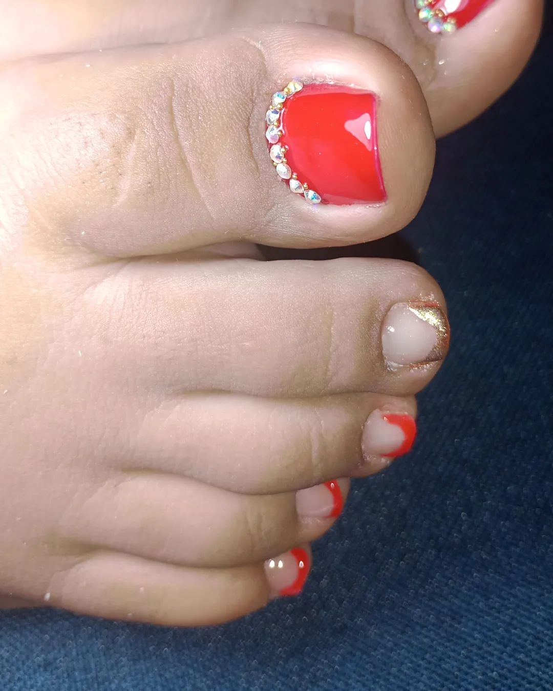

1. Preparación de las uñas: Comienza retirando el esmalte antiguo de tus uñas, ya que para aplicar el acrílico debes tener tus uñas limpias.
Luego, recorta tus uñas de manera que todas queden igual para lograr tener una base para montar las acrílicas. Puedes utilizar un corta uñas o
corta cutículas, y luego utilizar una lima para emparejarlas.
2. Materiales necesarios: Para la realización de esta técnica vas a necesitar una serie de materiales como lámpara UV, algodón, corta uñas,
uñas postizas, pegamento, acetona, pincel para uñas acrílicas, polvo acrílico, corta tips, gel UV, y palito de naranjo.
3. Aplicación del acrílico: Con un moldeador de cutícula agrega el acrílico que debe quedar adherido a la uña. Las uñas acrílicas se realizan
mezclando el polvo acrílico con el líquido acrílico². Luego, lleva la mezcla a la lámpara UV, que solo tarda tres minutos en su secado.
La base rubber para uñas es un tipo de esmalte que se utiliza como base antes de aplicar el esmalte de color. Tiene una consistencia densa y viscosa, lo que ayuda a nivelar la superficie de las uñas y a crear una base duradera y resistente.
 El pedicure es un tratamiento de belleza que se enfoca en el cuidado, limpieza y mantenimiento de los pies y las uñas.
¿Qué es el pedicure?: El pedicure es un tratamiento que data desde el Imperio Romano, que consistía en la eliminación de las callosidades de los pies. En la actualidad, no solo se enfoca en embellecer nuestros pies con esmaltes de moda, sino que también tiene beneficios para nuestra salud.
Beneficios del pedicure: El pedicure es más que solo pulir y dar brillo. En el proceso, se eliminan las células muertas y las durezas de la piel de tu pie. Además, es crucial cuidar nuestros pies, ya que su mal cuidado puede ocasionar graves problemas e incluso dificultarnos el caminar.
 